2011年普通高等学校招生全国统一考试理科数学（新课标全国卷）
第Ⅰ卷
一、选择题：本大题共12小题，每小题5分，在每小题给出的四个选项中，只有一项是符合题目要求的．
1．复数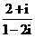的共轭复数是（ ）
A．
B．
C．
D．
答案：C
思路分析：
命题意图：本题考查复数的概念和运算，简单的数式整理能力．
解题思路：直接进行分母实化或在分子中提取约分．
解答过程：
解：法一：因式分解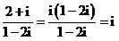，
（或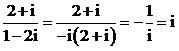），
所以它的共轭复数为，选C．
法二：排除法 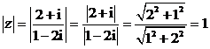，
知复数共轭复数的模也为1，
所以答案为C，D中的一个，
若为C则，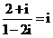即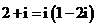等式成立，
所以答案为C．
法三：分母实化 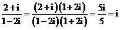
小结：复数运算乘法是本质，除法中的分母“实化”也是乘法．
知识点：复数的概念
复数的运算
试题难度：易
关键字：复数；复数的概念；复数的运算
年级：高三
2．下列函数中，既是偶函数又在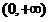单调递增的函数是（ ）
A．
B．
C．
D．
答案：B
思路分析：
命题意图：本题考查了幂函数，绝对值函数，二次函数，指数类函数的图象及性质以及偶函数，增函数的定义及增函数的判断．
解题思路：先判断奇偶性，对选项进行淘汰，再验证所剩函数是不是在单调递增．
解答过程：
解：y=x3为奇函数；y=－x2+1在(0，+∞)上为减函数；y=2－|x|在(0，+∞)上为减函数，故答案为B．
小结：
熟悉简单函数的图象和性质，在解题时可以直接利用自己记住的结果，节省考试时间．
知识点：函数的单调性
函数的奇偶性
试题难度：易
关键字：函数；函数的单调性；函数的奇偶性
年级：高三
3．执行下面的程序框图，如果输入的N是6，那么输出的p是（ ）
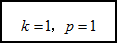
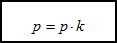
 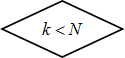
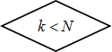
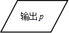

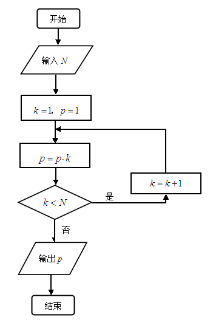
A．120
B．720
C．1440
D．5040
答案：B
思路分析：
命题意图：本题考查了算法中的程序框图中的循环结构，条件结构以及赋值运算，主要是先计算再判断然后赋值．
解题思路：搞清楚流程图中每个变量的作用以及每次循环之后，每个变量的取值，容易求出程序执行输出1×2×3×4×5×6=720．
解答过程：
解：可设，，则；；；；，输出720．故选B．
小结：
具有循环结构的流程图问题，最有效的求解方法之一，就是当循环次数比较少时，把每一次循环之后每个变量的取值都一一列出，当循环次数比较多时，利用数列通项把每次循环之后每个变量的取值一一列出．
知识点：循环结构
试题难度：易
关键字：算法；程序框图；循环结构
年级：高三
4．有3个兴趣小组，甲、乙两位同学各自参加其中一个小组，每位同学参加各个小组的可能性相同，则这两位同学参加同一个兴趣小组的概率为（ ）
A．
B．
C．
D．
答案：A
思路分析：
命题意图：本题考查了互斥事件至少一个发生及相互独立事件同时发生的概率问题，解题时要注意进行分类．
解题思路：分类记出事件和试验的结果数或利用n次独立试验中某一事件恰好发生k次的概率公式．
解答过程：
解：方法一：甲、乙各自参加一个兴趣小组是相互独立，且每人报每个兴趣小组也是独立的，故两位同学参加同一兴趣小组的概率为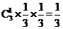；
方法二：设三个兴趣小组分别为A，B，C，他们参加情况共一下9种情况，其中参加同一小组情况共3种，故概率为 故选A．
故选A．
小结：
等可能事件的概率是建立在计数的基础之上，解题的难点和关键点是计数，所以要打好排列组合计数的知识基础，为学习概率奠基．
知识点：概率
古典概型
互斥事件的概率
试题难度：中
关键字：概率；古典概型；互斥事件
年级：高三
5．已知角 的顶点与原点重合，始边与x轴的正半轴重合，终边在直线上，则=（ ）
的顶点与原点重合，始边与x轴的正半轴重合，终边在直线上，则=（ ）
A．
B．
C．
D．
答案：B
思路分析：
命题意图：本题考查任意角的三角函数定义、二倍角公式及已知角的一个三角函数值求其他三角函数值，同时也对正、余弦的二次齐次式进行了考查．
解题思路：先求 的正切值，再利用二倍角余弦公式求解．
的正切值，再利用二倍角余弦公式求解．
解答过程：
解：方法一：角的终边在直线上可得
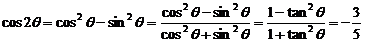.
方法二：易知tan =2，cos=．由cos2
=2，cos=．由cos2 =2=.
=2=.
小结：
三角求值问题主要考查转化思想，注意合理利用三角公式，对三角式的角名次进行合理改变，变形．
知识点：同角三角函数的基本关系式
二倍角公式
试题难度：中
关键字：三角函数；同角三角函数的基本关系；二倍角公式
年级：高三
6．在一个几何体的三视图中，正视图和俯视图如图所示，则相应的侧视图可以为（ ）
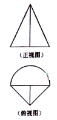
A．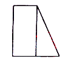
B． 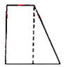
C． 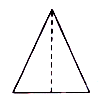
D． 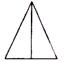
答案：D
思路分析：
命题意图：本题考查了立体几何中三视图的识别与理解、空间想象能力及抽象概括能力．
解题思路：注意正视图与俯视图可推测几何体的大致形状和所放位置，然后再来画几何体的侧视图．
解答过程：
解：通过正视图及俯视图可看出几何体为半个圆锥和一个三棱锥组合在一起，故侧视图为D．
小结：
几何体的三视图与几何体的形状、所放位置、视角方向等都有密切联系，遇到三视图问题应找到直观图，再由直观图来求解问题．
知识点：三视图与直观图
试题难度：中
关键字：立体几何；三视图
年级：高三
7．已知直线 过双曲线C的一个焦点，且与C的对称轴垂直，l与C交于A，B两点，为C的实轴长的2倍，则C的离心率为（ ）
过双曲线C的一个焦点，且与C的对称轴垂直，l与C交于A，B两点，为C的实轴长的2倍，则C的离心率为（ ）
A．
B．
C．2
D．3
答案：B
思路分析：
命题意图：本题主要考查双曲线的方程、定义、简单几何性质、离心率以及与直线的位置关系，属于基础题，也考查了数式整理能力．
解题思路：直接利用通径公式得到 的齐次等式，再整理为关于的方程，从中求解出结果．
的齐次等式，再整理为关于的方程，从中求解出结果．
解答过程：
解：|AB|=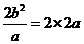，整理可得，得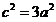，所以，答案为B．
小结：
求解离心率时，当方程足够，可以直接求出再求解；当方程较少时，只要找到的一个齐次等式，也可以转化为 的方程，从中求出
的方程，从中求出 值．
值．
知识点：双曲线的定义
直线与双曲线的位置关系
试题难度：中
关键字：双曲线；离心率；直线与双曲线的位置关系
年级：高三
8．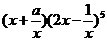的展开式中各项系数的和为2，则该展开式中常数项为（ ）
A．－40
B．－20
C．20
D．40
答案：D
思路分析：
命题意图：本题主要考查二项式定理的运用，二项式系数和以及展开式中的通项公式，也考查了转化化归的数学思想和等价变形的能力，属中等难度题．
解题思路：直接利用二项展开式的通项公式先等价变形，再利用通项公式处理．当然还可以直接利用组合原理得出结果．
解答过程：
解：法一：通项法 令 得，知
得，知 ，
，
故原式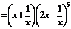，它的通项
由得，对应的常数项为80，
由得，对应的常数项，
故所求的常数项为40 ，选D．
法二：组合原理法 把原式看做6个因式相乘，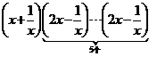要得到常数项，只要第1个括号提出，
再从余下的5个括号中选2个提出，
选3个提出；
还可以第1个括号提出，
从余下的括号中选2个提出 ，
，
选3个提出 ，故常数项为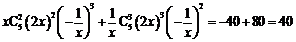
，故常数项为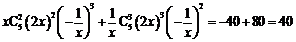
法三：等价变形法
由1知原式
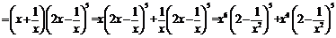，
要出现常数项，只要前一个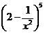展开出现项且后一个展开出现，
所以常数项为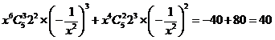．
法四：按比例分配
原二项式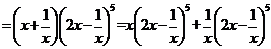，
二项式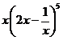中前后两项 的次数之比为
的次数之比为 ，
，
所以把二项式的次数5扣下来1给这一项，
剩下4分成两份分别给两项，
则得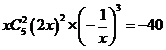；二项式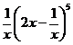中前后两项 的次数之比为
的次数之比为 ，
，
所以把二项式的次数5扣下来1给这一项，
剩下4分成两份分别给两项，
则得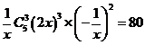，故常数项为40．
小结：
对于二项式定理的运用、二项式系数、展开式等相关知识要对题目深刻理解，特别是二项式系数的求解，这类题目陷阱较多，学生在这类知识的考查上容易出现问题．
知识点：二项式定理应用
试题难度：中
关键字：二项式定理；二项式定理的应用
年级：高三
9．由曲线，直线及轴所围成的图形的面积为（ ）
A．
B．4
C．
D．6
答案：C
思路分析：
命题意图：本题考查定积分的概念、几何意义等知识，也考查了数形结合思想以及运算、分析解决问题的能力．
解题思路：求曲线围成的图形的面积，就是要求函数在某个区间内的定积分．所以先求出曲线交点，确定积分区间，再去求定积分的值．
解答过程：
解：因为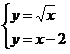的解为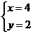，所以两图象交点为，于是面积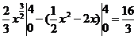，故选C．
小结：
定积分是新课标教材新加入的内容，高考只要考查定积分的运算和简单几何意义．其中积分区间的确定和被积函数的求解是解题出现错误比较多的地方．
知识点：定积分的概念
定积分的简单应用
试题难度：中
关键字：定积分；定积分的应用
年级：高三
10．已知与均为单位向量，其夹角为 ，有下列四个命题
，有下列四个命题
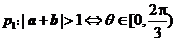 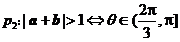
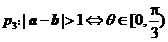 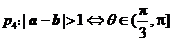，其中真命题是（ ）
A．
B．
C．
D．
答案：A
思路分析：
命题意图：该题考查平面向量的的概念、数量积运算以及三角函数值与角的取值范围，也考查了思维的严密性及理解的准确性，解题时要熟练把握概念及运算．
解题思路：两边平方除去模的符号，得出 的三角不等式，化简求解．
的三角不等式，化简求解．
解答过程：
解：由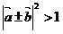可得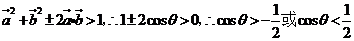，
，故选A．
小结：
本题主要是考查向量运算和解三角不等式，把向量形式的等式转化为三角不等式是至关重要的一步．主要向量数量积运算经常在等式或不等式两边同时平方．
知识点：平面向量的概念；平面向量的数量积；三角函数
试题难度：中
关键字：平面向量；数量积；三角函数
年级：高三
11．设函数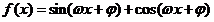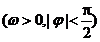的最小正周期为，且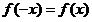，则（ ）
A． 在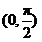单调递减
在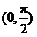单调递减
B． 在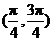单调递减
在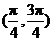单调递减
C． 在单调递增
在单调递增
D．在单调递增
答案：A
思路分析：
命题意图：本题考查三角函数式的化简及y=Asin(x+)的单调性、周期性及对称轴方程等基本知识，也考查了运算及化归思想．
解题思路：把复合型三角函数合为“一角一名一次”，再根据基本知识对照即可．
解答过程：
解：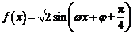，所以，又f(x)为偶函数，所以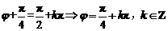，则在 单调递减，故选A．
单调递减，故选A．
小结：在求解时没有正确地把函数变为“一角一名一次”是出现错误比较多的一种丢分情况．
知识点：简单的三角函数变换
三角函数的性质
试题难度：中
关键字：三角函数；三角函数的性质
年级：高三
12．函数的图象与函数的图象所有交点的�M坐标之和等于（ ）
A．2
B．4
C．6
D．8
答案：D
思路分析：
命题意图：本题综合考查函数的图象和性质，特别是对称性，方程的根（零点）．要注意对称性的把握与运用．
解题思路：画出函数图象，变抽象思考为形象观察．
解答过程：
解：图象法求解：的对称中心是（1，0），也是的中心，时它们的图象在x=1的左侧有4个交点，则x=1右侧必有4个交点．
不妨把他们的横坐标由小到大设为，
则，
所以，选D．
小结：
数形结合可以使问题由抽象变形象，进而使问题变得简单，要想熟练的运用数形结合方法来解题，首先要记住常见函数图象、掌握函数图象的画法和函数图象变换．
知识点：函数的图象
函数的基本性质
函数的零点存在性定理
试题难度：难
关键字：函数；函数的图象；函数的零点
年级：高三
第Ⅱ卷
本卷包括必考题和选考题两部分．第13题－第21题为必考题，每个试题考生都必须做答．第22题－第24题为选考题，考生根据要求做答．
二、填空题：本大题共4小题，每小题5分．
13．若变量x，y满足约束条件则z=x+2y的最小值为_______________．
答案：－6
思路分析：
命题意图：本题考查在线性约束条件下，求目标函数的最小值．
解题思路：画出可行域，通过平移目标函数，求出最小值点，解方程求得最小值点坐标，得出最小值．也可以利用界点定值来求最小值．
解答过程：
解：根据得可行域为：

根据得，平移直线得在点取得最小值．
根据得，此时．
小结：
准确表示出可行域是解线性规划问题至关重要的一步，明白目标函数的几何意义是准确解题的保证．
知识点：简单线性规划问题的应用
试题难度：中
关键字：线性规划
年级：高三
14．在平面直角坐标系xOy中，椭圆C的中心为原点，焦点在x轴上，离心率为．过点的直线l交C于A，B两点，且的周长为16，那么C的方程为_______________．
答案：
思路分析：
命题意图：本题考查椭圆的定义、标准方程以及简单的几何性质等基础知识，也考查到了函数方程的数学思想．
解题思路：设出椭圆标准方程，利用离心率和椭圆定义找到两个方程，联立方程组直接求解．
解答过程：
解：由椭圆的定义知，，又因为离心率，，因此，所求椭圆方程为：．
小结：求椭圆的标准方程主要是求，，，基本方法是结合其定义用待定系数法来求解．
知识点：椭圆的定义
椭圆的标准方程和几何性质
试题难度：中
关键字：椭圆；离心率；椭圆的性质
年级：高三
15．已知矩形ABCD的顶点都在半径为4的球O的球面上，且AB=6，BC=，则棱锥O－ABCD的体积为_______________．
答案：
思路分析：
命题意图：本题考查多面体和旋转体的有关概念和性质以及体积的计算．也考查了数形结合思想和转化化归的能力．
解题思路：确定棱锥的高，找到球心的位置，正确运用公式求解结果．
解答过程：
解：如图，连接矩形对角线的交点 和球心，
和球心，
则，四棱锥的高为，
所以，体积为．
小结：
传统法解立体几何问题，注意定位、定性和定量，定位球最主要的是找到球心所在的位置．
知识点：空间几何体的体积
试题难度：中
关键字：空间几何体；简单几何体的概念；体积的计算
年级：高三
16．在中，，则AB+2BC的最大值为_______________．
答案：
思路分析：
命题意图：本题考查解三角形和三角函数求最值，其中主要是用角A来表示所求的边长，然后求最值，同时也包含了利用基本公式化简．
解题思路：关键在该条件下，三角形不确定，使得，从而由弦的有界性可求．
解答过程：
解：，
所以，故最大值是．
小结：
解三角形问题求解关键是利用图形中三角形之间的公共边和公共角在目标三角形中凑够三个条件（边或角），最后把所求量放在目标三角形中求解．
知识点：正弦定理
辅助角公式
两角和与差的三角函数公式
三角函数的性质
试题难度：难
关键字：解三角形；三角函数；三角函数恒等变形
年级：高三
三、解答题：解答应写文字说明，证明过程或演算步骤．
17．（本小题满分12分）
已知等比数列的各项均为正数，且．
（1）求数列的通项公式．
（2）设，求数列的前n项和．
思路分析：
命题意图：本题考查等比数列通项公式，性质、等差数列前项和，对数运算以及数列求和（裂项求和）与数列综合能力．解答过程要细心，公式性质要灵活运用．
解题思路：（1）先求首项和公比，后求通项；（2）可以先求出，然后利用裂项法求和．
解答过程：
解：（1）设数列{an}的公比为q，由得，所以．由条件可知q>0，故．由，得，所以．故数列{an}的通项式为an=．
（2）
故，
，
所以数列的前n项和为 ．
．
小结：
本题考查了数列递推、通项及求和，也考查了分析问题解决问题的能力，裂项相消法求数列前n项和，注意裂项的技巧．
知识点：数列求和
等比数列的通项公式
试题难度：中
关键字：等差数列；等比数列；通项公式；裂项相消求和
年级：高三
18．（本小题满分12分）
如图，四棱锥中，底面ABCD为平行四边形，，，底面ABCD．
（1）证明：；
（2）若PD=AD，求二面角A－PB－C的余弦值．

思路分析：
命题意图：该题考查空间内的垂直关系的证明，二面角的计算．考查定理的理解和运用，空间向量的运用．同时也考查了空间想象能力、逻辑思维能力和运算能力．解题时要注意法向量的计算和运用这一关键．
解题思路：（1）要证明线线垂直只要证明线面垂直或者用向量去证明；（2）求二面角的余弦只需建立适当的坐标系，由空间向量来完成．
解答过程：
解：（1）因为， 由余弦定理得，从而BD2+AD2= AB2，故BDAD，又PD底面ABCD，可得BD PD，所以BD
PD，所以BD 平面PAD． 故 PA
平面PAD． 故 PA BD．
BD．
（2）如图，以D为坐标原点，AD的长为单位长，射线DA为轴的正半轴建立空间直角坐标系D－，则，，，．
设平面PAB的法向量为=（x，y，z），则
即 ，因此可取
设平面PBC的法向量为m，则
可取，，故二面角A－PB－C的余弦值为
小结：
立体几何是高考必考内容之一，一般第（1）（2）问多以考查线线、线面、面面的平行与垂直关系为主，第（3）问主要考查角（线面角，二面角为主）．有时也设置两个问题．解决这类题的关键是线线、线面、面面平行与垂直的判定与性质定理要有正确的理解和掌握，并会用转化的思想来解决此类问题．
知识点：空间中的垂直关系
向量法求二面角
试题难度：中
关键字：空间的垂直关系；二面角；空间向量
年级：高三
19．（本小题满分12分）
某种产品的质量以其质量指标值衡量，质量指标值越大表明质量越好，且质量指标值大于或等于102的产品为优质品．现用两种新配方（分别称为A配方和B配方）做试验，各生产了100件这种产品，并测量了每件产品的质量指标值，得到下面试验结果：
（1）分别估计用A配方，B配方生产的产品的优质品率；
（2）已知用B配方生产的一种产品利润y（单位：元）与其质量指标值t的关系式为
，从用B配方生产的产品中任取一件，其利润记为X（单位：元）．求X的分布列及数学期望．（以试验结果中质量指标值落入各组的频率作为一件产品的质量指标值落入相应组的概率）．
思路分析：
命题意图：本题考查概率与统计的相关内容，主要把握统计结果对应的随机变量及概率，运用概念求解，避免理解上的偏差．
解题思路：利用统计数据和概率的意义求概率；由已知的利润函数为随机变量的值和相应的概率求数学期望．
解答过程：
解：（1）由试验结果知，用A配方生产的产品中优质的频率为，所以用A配方生产的产品的优质品率的估计值为0.3．由试验结果知，用B配方生产的产品中优质品的频率为，所以用B配方生产的产品的优质品率的估计值为0.42
（2）用B配方生产的100件产品中，其质量指标值落入区间：
的频率分别为0.04，，0.54，0.42，因此P(X=－2)=0.04，P(X=2)=0.54，P(X=4)=0.42，即X的分布列为
X的数学期望值E(X)=－2×0.04+2×0.54+4×0.42=2.68．
小结：以求期望为最终目标的题型是高考对概率知识以解答题形式考查的热点题型．解答这类问题关键在分析随机变量取每一个值时所对应的随机事件，并求相关概率，再列出随机变量分布列，应用公式求解即可．
知识点：频率与概率
离散型随机变量及其分布列
试题难度：中
关键字：概率；离散型随机变量；数学期望
年级：高三
20．（本小题满分12分）
在平面直角坐标系xOy中，已知点A（0，－1），B点在直线上，M点满足，，M点的轨迹为曲线C．
（1）求C的方程；
（2）P为C上动点， 为C在点P处的切线，求O点到距离的最小值．
为C在点P处的切线，求O点到距离的最小值．
思路分析：
命题意图：本题考查曲线方程的求法、直线方程、点到直线的距离、用不等式求最值以及导数的应用等，要把握每一个环节的关键．
解题思路：（1）按照“建系、设点、列式、化简”求轨迹方程；（2）把点到直线的距离用动点坐标表示、然后化简、利用均值不等式求最值．
解答过程：
解：(1)设M(x，y)，由已知得B(x，－3)，A(0，－1)，所以=（－x，－1－y），
=(0，－3－y)，=(x，－2)，再由题意可知（+）•=0，
即（－x，－4－2y）•(x，－2)=0．所以曲线C的方程式为y=x－2．
(2)设P(x，y)为曲线C：y=x－2上一点，因为y=x，所以 的斜率为
的斜率为 x
x
因此直线 的方程为，
的方程为，
即．
则O点到的距离．又 ，
，
所以
当 =0时取等号，所以O点到
=0时取等号，所以O点到 距离的最小值为2．
距离的最小值为2．
小结：
直线和圆锥曲线的位置关系，如若能数形结合，借助图形的几何性质则较为简便，对于动态问题，注意“动中求静”．
知识点：求轨迹方程；直线与圆锥曲线的位置关系
试题难度：难
关键字：轨迹方程；直线与圆锥曲线的位置关系
年级：高三
21．（本小题满分12分）
已知函数，曲线在点处的切线方程为．
（1）求a，b的值；
（2）如果当x>0，且时，，求k的取值范围．
思路分析：
命题意图：本题综合考查导数的概念、性质、求导法则、导数的应用、分类讨论等概念、性质、方法和思想．要深入理解和把握并进行拓展． 抓住基本思路，去分母化简问题，不可死算．
解题思路：（1）利用导数概念和性质求字母的值；（2）构造函数用导数判定函数的单调性，通过分类讨论确定参数取值范围．
解答过程：
解：（1），由于直线的斜率为，且过点，故即，解得，．
（2）由（1）知，
所以．
考虑函数，则．
(i)设，由知，当时，．而，故当时，，可得；
当x（1，+）时，h（x）<0，可得 h（x）>0，从而当x>0，且x1时，
f（x）－（+）>0，即f（x）>+．
（ii）设0<k<1．由于当x（1，）时，（k－1）（x2 +1）+2x>0，故(x)>0，而
h(1)=0，故当x （1，）时，h（x）>0，
（1，）时，h（x）>0，
可得h（x）<0，与题设矛盾．
（iii）设k1．此时（x）>0，而h（1）=0，故当x （1，+）时，h（x）>0，
（1，+）时，h（x）>0，
可得 h（x）<0，与题设矛盾．综合得，k的取值范围为（－
h（x）<0，与题设矛盾．综合得，k的取值范围为（－ ，0]．
，0]．
小结：
有关导数的高考题主要考查导数的概念、几何意义、函数的单调性、极值以及应用问题中的最值．高考对导数的考查定位于作为解决初等数学问题的工具出现，侧重于以下三个方面：(1)运用导数的有关知识研究函数极值、最值问题，这是高考长考不衰的热点内容．另一方面从数学角度反映实际问题，建立数学模型，转化为函数的最值问题，再利用函数的导数求解；(2)利用导数的几何意义，研究曲线的切线斜率或切线方程问题也是导数的一个重要应用，并且也是高考考查的重点内容之一；(3)运用导数的有关知识，研究函数的单调性是又一重点应用，在高考中占有很重要的地位．
知识点：导数的几何意义
导数在研究函数中的应用
试题难度：难
关键字：导数的应用；函数的单调性
年级：高三
请考生在第22、23、24题中任选一题做答，如果多做，则按所做的第一题记分．做答时请写清题号．
22．（本小题满分10分）
选修4－1：几何证明选讲
如图，， 分别为
分别为 的边，上的点，且不与的顶点重合．已知的长为m，的长为n，AD，的长是关于的方程的两个根．
的边，上的点，且不与的顶点重合．已知的长为m，的长为n，AD，的长是关于的方程的两个根．
（1）证明：，， ，四点共圆；
，四点共圆；
（2）若，且，求，，，所在圆的半径．
思路分析：
命题意图：本题主要考查平面几何的证明，四点共圆，三角形相似，一元二次方程根与系数的关系．
解题思路：四点共圆常用的证明方法是四边形的一个外角等于与它不相邻的内角，当然也可以求出过其中三点的圆，然后证另一点也在这个圆上，也可以证明以两个点为端点的线段的垂直平分线与以另两个点为端点的线段的垂直平分线相交．
解答过程：
解：（1）连接DE，根据题意在△ADE和△ACB中，
AD×AB=mn=AE×AC，
即．又∠DAE=∠CAB，从而△ADE∽△ACB
因此∠ADE=∠ACB，所以C，B，D，E四点共圆．
（2）m=4， n=6时，方程x2－14x+mn=0的两根为x1=2，x2=12．
故AD=2，AB=12，取CE的中点G，DB的中点F，分别过G，F作AC，AB的垂线，两垂线相交于H点，连接DH，因为C，B，D，E四点共圆，所以C，B，D，E四点所在圆的圆心为H，半径为DH．由于∠A=90°，故GH∥AB， HF∥AC，HF=AG=5，DF= (12－2)=5，故C，B，D，E四点所在圆的半径为5．
小结：
等腰三角形两底角相等、同弧所对圆周角相等、三角形外角等于不相邻的两个内角之和、圆的内接四边形外角与内对角相等、对角互补等都是解决角的问题的基本思路；相交弦定理、切割线定理、相似相角形等知识都是解决边问题的基本途径．
知识点：几何证明选讲
试题难度：中
关键字：四点共圆；三角形相似；一元二次方程根与系数的关系
年级：高三
23．(本小题满分10分)
选修4－4：坐标系与参数方程
在直角坐标系xOy中，曲线 的参数方程为（为参数）M是上的动点，P点满足
的参数方程为（为参数）M是上的动点，P点满足 ，P点的轨迹为曲线．
，P点的轨迹为曲线．
(1)求 的方程；
的方程；
(2)在以O为极点，x轴的正半轴为极轴的极坐标系中，射线与C1的异于极点的交点为A，与 的异于极点的交点为B，求．
的异于极点的交点为B，求．
思路分析：
命题意图：本题主要考查曲线的参数方程、极坐标方程、平面向量及利用极坐标求两点间的距离．
解题思路：解决本题关键的方程是搞清P与M的关系，利用极坐标方程求两点间的距离主要是理解极径的概念．
解答过程：
解：（1）设P(x，y)，则由条件知M( )．由于M点在
)．由于M点在 上，所以
上，所以
，即 ．
从而 的参数方程为，
的参数方程为， （为参数），也就是．
（为参数），也就是．
（2）
曲线的极坐标方程为，
曲线 的极坐标方程为
的极坐标方程为 ，
，
射线与的交点的极径为，
射线与的交点的极径为，
所以．
小结：
解决参数问题的最好方法是进行合理消参，将参数方程转化为熟悉的普通方程，利用熟悉的方法和熟悉的策略进行求解，但值得注意的是，在参数方程中往往隐含着变量的取值范围，因此在化为普通方程时一定不要忽视对条件的限制．
知识点：参数方程
极坐标方程
试题难度：中
关键字：参数方程；极坐标方程
年级：高三
24．(本小题满分10分)
选修4－5：不等式选讲
设函数，其中．
（1）当时，求不等式的解集；
（2）若不等式的解集为，求a的值．
思路分析：
命题意图：本题主要考查绝对值不等式的解法，及已知不等式的解集求参数的取值范围．
解题思路：绝对值不等式的解题思路是利用绝对值的定义去绝对值或平方去绝对值或对绝对值里的代数式讨论去绝对值．对含参数问题要对参数进行讨论．
解答过程：
解：（1）当时，可化为．
由此可得或．
故不等式的解集为 或．
或．
(2) 由 得，
此不等式化为不等式组，
或，即 或，因为，所以不等式组的解集为，由题设可得= ，故 ．
．
小结：
本题主要考查含绝对值不等式解集的讨论问题以及绝对值不等式恒成立问题，解答这类问题的关键是根据分类讨论的思想去掉绝对值；还要注意绝对值不等式 的灵活应用．
的灵活应用．
知识点：含绝对值不等式的解法
试题难度：中
关键字：绝对值不等式；含参数的不等式恒成立问题
年级：高三